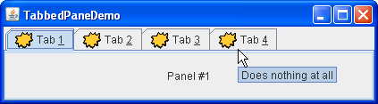

Lección: Usando Componentes Swing
Sección: Cómo Usar Varios Componentes
Cómo Usar Paneles Tabulados
Con la clase
JTabbedPane
, puede hacer que varios componentes, tales como los paneles, compartan el mismo
espacio. El usuario elije qué componente ver seleccionando la pestaña correspondiente al componente deseado.
Si quiere una funcionalidad similar sin el interfaz de pestañas, puede usar un
diseño de tarjeas en vez de una panel
tabulado.
Para Crear Paneles Tabulados
Para crear un panel tabulado, instancie JTabbedPane, cree los componentes que desee visualizar, y
entonces añada los compoentes al panel tabulado usando el método addTab.
La siguiente imágen presenta una aplicación llamada TabbedPaneDemo que tiene un panel tabulado con
cuatro pestañas.

Pruebe esto:
-
Pulse el botón Lanzar para ejecutar TabbedPaneDemo usando
Java™ Web Start (
descargue KDJ 7 o posterior). Alternativamente, para compilar y ejecutar el ejemplo usted
mismo, consulte el índice de ejemplos.

-
Coloque el cursor sobre una pestaña.
La tool tip asociada con la pestaña aparece. Como una convenencia, puede especificar el texto de la tool tip cuando añade un componente al panel tabulado. -
Selecciona una tabla pulsándola.
El panel tabulado muestra el componente correspondiente a la pestaña. -
Seleccione una pestaña introduciendo su mnemotécnico.
Por ejemplo, en la apariencia Java puede seleccionar la pestaña etiquetada "Tab 3" tecleando Alt-3. -
Navegue entre las pestañas desplazables.
Este ejemplo suministra pestañas desplazables. Redimensione el cuadro de diálogo moviéndolo al límite izquierdo o derecho de forma que las pestañas no quepan dentro del diálogo. Las flechas de desplazamiento aparecerán cerca de las pestañas.
Pulse la flecha par ver una de las pestañas ocultas.
Note que pulsar la flecha sólo revela las pestañas ocultas. No selecciona una pestaña nueva.
Como el ejemplo TabbedPaneDemo muestra, una pestaña puede tener una tool tip y un
mnemotécnico, y puede visualizar tanto texto como una imágen.
Colocación de las Pestañas
La ubicación predeterminada de las pestañas está establecida en la ubicación TOP, como se mostró
arriba. Puede cambiar la colocación de las pestañas a LEFT, RIGHT, TOP
o BOTTOM usando el método setTabPlacement.
Código para los Paneles Tabulados
El siguiente código de
TabbedPaneDemo.java
crea el panel tabulado en el ejemplo previo. Note que ningún código de manejo de eventos es necesario. El
objeto JTabbedPane se cuida de los eventos del ratón y el teclado por usted.
JTabbedPane tabbedPane = new JTabbedPane();
ImageIcon icon = createImageIcon("images/middle.gif");
JComponent panel1 = makeTextPanel("Panel #1");
tabbedPane.addTab("Tab 1", icon, panel1,
"No hace nada");
tabbedPane.setMnemonicAt(0, KeyEvent.VK_1);
JComponent panel2 = makeTextPanel("Panel #2");
tabbedPane.addTab("Tab 2", icon, panel2,
"Hace el doble de nada");
tabbedPane.setMnemonicAt(1, KeyEvent.VK_2);
JComponent panel3 = makeTextPanel("Panel #3");
tabbedPane.addTab("Tab 3", icon, panel3,
"Todavía no hace nada");
tabbedPane.setMnemonicAt(2, KeyEvent.VK_3);
JComponent panel4 = makeTextPanel(
"Panel #4 (has a preferred size of 410 x 50).");
panel4.setPreferredSize(new Dimension(410, 50));
tabbedPane.addTab("Tab 4", icon, panel4,
"No hace nada en absoluto");
tabbedPane.setMnemonicAt(3, KeyEvent.VK_4);
Como el código previo muestra, el método addTab maneja la mayor parte del trabajo en configurar
una pestaña en un panel tabulado. El método addTab tiene varias formas, pero todas ellas usan
tanto una cadena de título y el componente que se visualiza en la pestaña. Opcionalmente, puede especificar un
icono y una cadena para la Tool Tip. El texto o icono (o ambos) pueden ser
nulos. Otra forma de crear una pestaña es usar el método insertTab, el cual le permite especificar
el índice de la pestaña que está añadiendo. Note que el método addTab no perimte la especificación
de un índice en este paso.
Para Cambiar a Pestañas Específicas
Hay tres formas de cambiar a pestañas específicas usando el IGU.
- Usar el ratón. Para cambiar a una pestaña específica, el usuariola pulsa con el ratón.
-
Usar las flechas del teclado. Cuando el objeto
JTabbedPanetiene el foco, las flechas pueden ser usadas para cambiar de pestaña en pestaña. -
Usar mnométecnicos de teclado. El método
setMnemonicAtpermite al usuario cambiar a una pestaña específica usando el teclado. Por ejemplo,setMnemonicAt(3, KeyEvent.VK_4)hace '4' el mnemotécnico para la cuarta pestaña (el cual está en el índice 3, ya que los índices empiezan con 0); presionar Alt-4 hace que el componente de la cuarta pestaña aparezca. A menudo, un mnemotécnio usa un carácter en el título de la pestaña que es entonces automáticamente es subrayado.
Para cambiar a una pestaña especifica programáticamente, use los métodos
setSelectedIndex o
setSelectedComponent.
Tamaño Preferidos en las Pestañas
Cuando construye componentes para añadir a un panel tabulado, tenga en mente que no importa qué hijo de un panel tabulado sea visible, cada hijo obtiene la misma cantidad de espacio en el cual mostrarse a sí mismo. El tamaño preferido del panel tabulado es lo suficientemente grande para visualizar el hijo más alto en su altura preferida, y su hijo más ancho en su anchura preferida. Similarmente, el tamaño mínimo del panel tabulado depende del mayor ancho y alto mínimos de todos sus niños.
En el ejemplo TabbedPaneDemo, el cuarto panel tiene una anchura y altura preferida que es más
grande que los de los otros paneles. Así, el tamaño preferido del panel tabulado es lo suficientemente grande
como para mostrar el cuarto panel en su tamaño preferido. Cada panel obtiene exactamente la misma cantidad de
espacio ─ 410 pixels de ancho y 50 de alto, asumiendo que el panel tabulado esté en su tamaño
preferido. Si no entiende como se usa el tamaño preferido, por favor consulte
Cómo Funciona la Gestión de Diseño.
Pestañas con Componentes Personalizados
El ejemplo TabComponentsDemo presenta un panel tabulado cuyas pestañas contienen componentes
reales. El uso de componentes personalizados trae nuevas capacidades tales como botones, cuadros combinados,
etiquetas, y otros componentes a las pestañas, y permite una interacción de usuario más compleja.
Aqui tiene un panel tabulado con botones de cierre en sus pestañas.
Pruebe esto:
-
Pulse el botón Lanzar para ejecutar TabComponentsDemo usando
Java™ Web Start (
descargue KDJ 7 o posterior). Alternativamente, para compilar y ejecutar el ejemplo usted
mismo, consulte el índice de ejemplos.
- Coloque el cursor sobre una pestaña.
- Seleccione una pestaña pulsándola (asegúrese de que pulsa la pequeña cruz).
-
Coloque el cursor sobre uno de los controles con una pequeña cruz.
La cruz se vuelve magenta y queda encerrada en un cuadrado. Una tool tip asociada al botón de cierre aparece.
Pulse la cruz con el botón izquierdo del ratón para cerrar la pestaña. - Restaure las pestañas que han sido eliminados eligiendo el elemento Reset JTabbedPane desde las opciones del menú.
-
Note que las pestañas con componentes personalizados son visualizadas encima de las pestañas originales
del panel tabulado.
Para ver las pestañas debajo, abra el menú Opciones y desmarque la casilla de verificación de TabComponents. - Visualice las pestañas con componentes seleccionando de nuevo la casilla Use TabaComponents.
- Cierre todas las pestañas. Ahora el panel tabulado está vacío.
Para Eliminar Pestañas
El siguiente código desde
ButtonTabComponent.java elimina una pestaña dsde el panel tabulado.
Note que el código de manejo de eventos es necesario. Ya que cada pestaña contiene un objeto
JButton real , debe enlazar un ActionListener al botónd de cierre. Como el
usuario pulsa el botón, el método actionPerformed determina el índice de la pestaña a
la que pertenece y elimina la pestaña correspondiente.
public void actionPerformed(ActionEvent e) {
int i = pane.indexOfTabComponent(ButtonTabComponent.this);
if (i != -1) {
pane.remove(i);
}
}
Para Dar Títulos a las Pestañas Personalizadas
El código de abajo, tomado de
ButtonTabComponent.java, muestra como un componente personalizado de
una pestaña obtiene un título dede una pestala del panel tabulado original.
JLabel label = new JLabel(title) {
public String getText() {
int i = pane.indexOfTabComponent(ButtonTabComponent.this);
if (i != -1) {
return pane.getTitleAt(i);
}
return null;
}
};
La IPA del Panel Tabulado
Las siguientes tablas listan los constructores y métodos comunmente utilizados de JTabbedPane. La
IPA para usar panel tabulados se divide en las siguientes categorías:
- Crear y Configurar un Panel Tabulado
- Insertar, Eliminar, Encontrar, y Seleccionar Pestañas
- Cambiar la Apariencia de la Pestaña
- Configurar Componentes Personalizados en Pestañas</>
| Método o Constructor | Propósito |
|---|---|
|
JTabbedPane()
JTabbedPane(int) JTabbedPane(int, int) |
Crea un panel tabulado. El primer argumento opcional especifica si las pestañas deberían aparecer. Por
defecto, las pestañas aparecen encima del panel tabulado. Puede especificar estas posiocnes (definidas
en la interfaz SwingConstants, la cual implemente JTabbedPane):
TOP, BOTTOM, LEFT, RIGHT. El segundo argumento
opcoinal especifica la política de diseño. Puede especificar una de estas políticas (definidsa en
JTabbedPane):
WRAP_TAB_LAYOUT o
SCROLL_TAB_LAYOUT.
|
|
addTab(String, Icon, Component, String)
addTab(String, Icon, Component) addTab(String, Component) |
Añade una nueva pestaña al panel tabulado. El primer argumento especifica el texto sobre la pestaña. El argumento de icono opcional especifica el icono de la pestaña. El argumento componente especifica el componente que el panel tabulado mostraría cuando se seleccione la pestaña. El cuarto argumento, cuando está presente, especifica el texto de la tool tip para la pestaña. |
|
void setTabLayoutPolicy(int)
int getTabLayoutPolicy() |
Establece u obtiene la política que el panel tabulado usa en el diseño de pestañas cuando todas las
pestañas que no caben en una sola ejecución. Los valores posibles son WRAP_TAB_LAYOUT y
SCROLL_TAB_LAYOUT. La política por defeecto es WRAP_TAB_LAYOUT.
|
|
void setTabPlacement(int)
int getTabPlacement() |
Establece u obtiene la ubicación donde las pestañas aparecen relativas al contenido. Los valores
posibles (definidas en SwingConstants, la cual es implementada por
JTabbedPane) son TOP, BOTTOM, LEFT, y
RIGHT.
|
| Método | Propósito |
|---|---|
| insertTab(String, Icon, Component, String, int) |
Inserta una pestaña en el índice especificado, donde la primera pestaña está en el índice 0. Los
argumentos son los mismos que para addTab.
|
|
remove(Component)
removeTabAt(int) |
Elimina la pestaña correspondiente al componente especificado o índice. |
| removeAll() | Elimina todas las pestañas. |
|
int indexOfComponent(Component)
int indexOfTab(String) int indexOfTab(Icon) |
Devuelve el índice de la pestaña que tiene el componente especificado, título, o icono. |
|
void setSelectedIndex(int)
void setSelectedComponent(Component) |
Seleccione la pestaña que tiene el componente especificado o índice. Seleccionar una pestaña tiene el efecto de visualizar su componente asociado. |
|
int getSelectedIndex()
Component getSelectedComponent() |
Devuelve el índice o componente para la pestaña seleccionada. |
| Método | Propósito |
|---|---|
|
void setComponentAt(int, Component)
Component getComponentAt(int) |
Establece u obtiene qué componente se asocia con la pestaña en el índice especificado. La priemra pestaña se encuentra en el índice 0. |
|
void setTitleAt(int, String)
String getTitleAt(int) |
Establece u obtiene el título de la pestaña en el índice especificado. |
|
void setIconAt(int, Icon)
Icon getIconAt(int) void setDisabledIconAt(int, Icon) Icon getDisabledIconAt(int) |
Establece u obtiene el icono visualizado por la pestaña en el índice especificado. |
|
void setBackgroundAt(int, Color)
Color getBackgroundAt(int) void setForegroundAt(int, Color) Color getForegroundAt(int) |
Establece u obtiene el color de fondo o primer plano uado por la pestaña en el índice especificado. Por
defecto, una pestaña usa los colores de fondo y primer plano del panel tabulado. Por ejemplo, si el
fondo del panel tabulado es negro, entonces cada título de pestaña será negro excepto para cualquier
pestaña para las que especifque otro color usando setForegroundAt.
|
|
void setEnabledAt(int, boolean)
boolean isEnabledAt(int) |
Establece u obtiene el estado habilitado de la pestaña en el índice especificado. |
|
void setMnemonicAt(int, int)
int getMnemonicAt(int) |
Establece u obtiene el mnemotécnico de teclado para acceder a la pestaña especificada. |
|
void setDisplayedMnemonicIndexAt(int, int)
int getDisplayedMnemonicIndexAt(int) |
Establece u obtiene qué carácter sería decorado para representar el mnemotécnico. Esto es útil cuando el carácter mnemotécnico aparece múltiples veces en el título de la pestaña y no quiere que la primera ocurrencia sea subrayada. |
|
void setToolTipTextAt(int, String)
String getToolTipTextAt(int) |
Establece u obtiene el texto visualizado en las etiquetas emergentes para la pestaña especificada. |
| Método | Propósito |
|---|---|
| void setTabComponentAt(int, Component) |
Sets the component that is responsible for rendering the title or icon (or both) for the tab specified
by the first argument. When a null value is specified, JTabbedPane renders the title or
icon. The same component cannot be used for several tabs.
|
| Component getTabComponentAt(int) | Gets the tab component for the tab at the index specified by the argument. If there is no tab component for the specified tab, a null value is returned. |
| int indexOfTabComponent(Component) | Checks if the specified component belongs to one of the tabs. Return the index of the corresponding tab or -1 if there is no such a tab. |
Ejemplos que Usan Paneles Tabulados
Esta tabla lista los ejemplos que usa JTabbedPane y apunta a donde esos ejempos están descritos.
| Ejemplo | Dónde se Describe | Notas |
|---|---|---|
TabbedPaneDemo
|
Esta página | Demuestra unas pocas capacidades del panel tabulado, tal como etiquetas emergentes, iconos, diseño desplazable, y mnemotécnicos. |
TabComponentsDemo
|
Esta página | Demuestra los componentes personalizados en las pestañas, Usa un panel tabulado con los botones de cierre. |
BoxAlignmentDemo
|
Cómo Usar BoxLayout |
Usa un JTabbedPane como el único elemento secundario del panel de contenido
de un marco.
|
BorderDemo |
Cómo Usar Bordes | Usa su panel tabulado de una manera similar a BoxAlignmentDemo. |
DialogDemo |
Cómo Usar Diálogos | Tiene un panel tabulado en el centro de un panel contenido de un marco, con una etiqueta debajo de él. |